A7 新林口 重劃區 - 社區服務
提案改善
選擇項目
提案改善內容
| 日期 | {{post.Date}} |
| 單位 | {{post.Resident}} |
| 提案 | {{post.Name}} |
| 主題 | {{post.Topic}} |
| 說明 | |
| 辦法 | |
| 處理結果 |
A7民意調查
A7重劃區的規劃是當時「十大民怨」民調, 發現「都會地區房價過高」為民怨之榜首。 因而開發機場捷運沿線的可利用土地，供民眾便宜購屋的德政。 相關規劃請請參考 社區網站簡介 - A7站區開發案興辦事業計畫 相關資料。至於A7重劃區的房價資料匯總在 社區網站/社區建案 - 建案市場行情 。 在機場捷運沿線中, A7站的房價相對有很高的增值但仍有相對廉價的優勢。
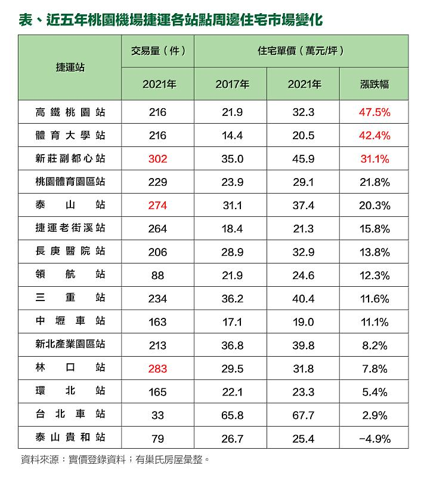
2022 哪些參選人關心A7居民的訴求？
- 聯合新聞網 2022/04/13 連日桃北通勤被笑傻 羅智強自嘲：桃園正需要傻蛋市長
2022選舉年 A7居民 對地方建設 期望改善的民意調查
為讓地方官員及民意代表能了解A7重劃區居民對此地的施政期望, 於2022/3/24日使用臉書 A7新林口-社區網站 所做的意見調查, 於2022/03/28 日整理 居民希望改善的前十大議題。 4天內約有3,200次點閱, 依據票選數目由多到少排序如下： 臉書的民意調查仍持續開放，讓居民持續表達意見！- 環境保護 - 加強管制華亞科學園區的有害物質排放，有效管理區域空氣污染。 334票
- 社區環境 - 加速執行龜山第三公墓的遷移作業。253 票
- 社區環境 - 開發A7重劃區的公園綠地, 增加兒童遊戲場所。225票
- 交通規劃 - 增設A7區域內公共交通, 例如建立社區共享的小巴。157票
- 環境保護 - 加強區域環境清潔工作, 讓街道不再充斥垃圾。145票
- 公共建設 - 增設區域圖書分館。 137票
- 環境保護 - 儘速終結大埔垃圾轉運站, 讓露天堆放的垃圾能撤離A7重劃區。133票
- 公共建設 - 落實龜山國民運動中心的規劃。92票
- 交通規劃 - 規劃A7重劃區的自行車路線及建構專屬車道。 87票
- 交通規劃 - 增設公共機車停車場, 讓機車能有充足的停車位. 72票
居民其他許願項目
-
設立郵局辦事處/郵筒 - 目前文青里似乎連投遞的郵筒都沒有？ 最近的郵局設在文化里。樂善里有兩個郵筒 請參考 社區網站 - 公共服務
陳雅倫議員 2022/05/02 臉書: 因應陳雅倫議員的建議，郵局短期會先設置「龜山文青郵政代辦所」提供周邊社區便民的郵政服務，預計 2022/05/03開始營運。 就是在合宜住宅區 台慶不動產裡面 - 設置警察局派出所 - 距A7重劃區最近是 龜山分局大埔派出所 請參考 社區網站 - 機關學校
- 交通違規的整治 - 交通違規檢舉法規修訂案縮減了違規檢舉範圍，但對於影響行車安全的違規仍是可以使用手機舉報。在許多違規嚴重區域，警方會提供QRcode 供民眾舉報。 通常都有很好的效果。請參考 社區網站 - 行人規劃
- 主要道路的開通問題 - 包含文學路延伸等項目, 已獲得中央的經費補助。目前應該是按計劃進行。請參考 社區網站 - 未來規劃
各項議題的規劃與檢討 請點擊下面主題, 展開內容
環境保護類
以往居民關切的異味問題很可能主要不是來自 華亞園區排放的 VOCs。而是由於大埔垃圾轉運站堆積到四層樓高的露天暴露的代轉運垃圾。
而此臭味問題根本上就是市府環保局因垃圾焚化爐量能不足所產生的問題。包含牛煦庭議員, 陳雅倫議員曾多次質詢過的臭味及新聞媒體追蹤的
A7重劃區的臭味主要製造者就是市府環保局! 將在議題 07.環境保護 - 儘速終結大埔垃圾轉運站 中討論。
華亞科技園區所排放的有害物質主要包含 揮發性有機化合物 VOCs 及 酸雨，在社區網站中都有深入的探討。請參考社區網站 環境保護 - 認識VOCs, A7空汙大數據, 酸雨監測, 等相關網頁資訊。
由於以往A7重劃區的臭味問題 引發居民的熱烈討論，這個議題再度被推舉為首要議題。 但有害物質VOCs 未必會產生異味，對健康的危害卻遠大於垃圾的臭味。 對空汙有害物質問題, 市府環保局的回應永遠是“查無不法”，也就是現有中央法規是"無法可管"。
此一問題可以先經由 行動參與及公民科學 由民間公益團體 對有害物質排放大戶，依據 Environment, Social and Governance, ESG 指標讓企業對社會做出應有的責任。 藉由ESG的與論壓力讓企業能儘速做出合理的改善措施。 請先參考社區網站 對政府的改善建言, 及 行動參與及公民科學 等相關討論。
桃園市府應做長期規劃，有效讓區域內各企業在有害物質排放, 酸雨控制等能建立逐年降低的KPI。而不是“坐視不管”！ 議員們應該先充實自身的相關知識, 或尋求民間相關公益團體/專業分析設備 的協助 才能做有效的施政監督！
華亞科技園區所排放的有害物質主要包含 揮發性有機化合物 VOCs 及 酸雨，在社區網站中都有深入的探討。請參考社區網站 環境保護 - 認識VOCs, A7空汙大數據, 酸雨監測, 等相關網頁資訊。
由於以往A7重劃區的臭味問題 引發居民的熱烈討論，這個議題再度被推舉為首要議題。 但有害物質VOCs 未必會產生異味，對健康的危害卻遠大於垃圾的臭味。 對空汙有害物質問題, 市府環保局的回應永遠是“查無不法”，也就是現有中央法規是"無法可管"。
此一問題可以先經由 行動參與及公民科學 由民間公益團體 對有害物質排放大戶，依據 Environment, Social and Governance, ESG 指標讓企業對社會做出應有的責任。 藉由ESG的與論壓力讓企業能儘速做出合理的改善措施。 請先參考社區網站 對政府的改善建言, 及 行動參與及公民科學 等相關討論。
桃園市府應做長期規劃，有效讓區域內各企業在有害物質排放, 酸雨控制等能建立逐年降低的KPI。而不是“坐視不管”！ 議員們應該先充實自身的相關知識, 或尋求民間相關公益團體/專業分析設備 的協助 才能做有效的施政監督！
大埔垃圾轉運站 相關問題請參考 社區網站 - 大埔垃圾轉運站。
由於大埔暫存場的垃圾已堆至四層樓高，露天暴露的垃圾不但產生臭味，更會孳生蚊蠅造成細菌擴散等問題。現任議員/新聞媒體常常為區域惡臭問題發聲,
但都沒有到大埔轉運站去了解大家抱怨的惡臭就來自此露天暴露下的垃圾山 ？
本項議題需要 追蹤 桃園第2座焚化爐、觀音生質能中心原預計於2021/12月試運轉，目前何時能正式作業。並需要龜山區議員能要求市府做出大埔轉運站終止使用的時程表。嚴格監督整體作業進度。
本項議題需要 追蹤 桃園第2座焚化爐、觀音生質能中心原預計於2021/12月試運轉，目前何時能正式作業。並需要龜山區議員能要求市府做出大埔轉運站終止使用的時程表。嚴格監督整體作業進度。
請參考 社區網站 - 環境衛生管控
對此一議題的討論。
多數里長都成立了 環保志工在默默為地方付出，但遠遠無法因應 各建案工作人員每天任意丟棄的垃圾。
市府環保局有權利對建商開罰，市府如不願得罪建商就應該負責清除滿街的垃圾。
只要對照新北市林口區的環境整潔，就應該知道桃園市環保局的績效有多差。居民這麼卑微的期望能有市府官員能重視！
只要對照新北市林口區的環境整潔，就應該知道桃園市環保局的績效有多差。居民這麼卑微的期望能有市府官員能重視！
環境建設類
有關龜山第三公墓遷移事項 請參考社區網站 - 建設願景。
依據 社區網站 - A7站區開發案興辦事業計畫
各項計畫書, 尤其是 林口特定區/ 配合改善庶民生活行動方案 - 機場捷運沿線站區周邊土地開發 - A7站區開發案興辦事業計畫書 :
細部計畫書
A7重劃區的綠地規劃包含 (需要更新?)
A7重劃區的綠地規劃包含 (需要更新?)
- 公園用地 - ５處 總面積 2.64公頃
- 公園兼滯洪池用地 - 17處 總面積 11.09公頃
- 綠地 - 重劃區邊緣 計畫面積 3.60公頃
- 廣場用地 - A7 捷運站兩側 總面積 1.32公頃
交通規劃類
如何讓自行車能當作最後一哩的交通工具？是希望有行人及自行車區分的專用道路規劃。在新北市林口區就有許多範例。A7重繪區需要建立自行車道專用路線讓多數社區能利用Ubike
但不危及行人步行安全的規劃。
初步構想請參考 社區網站 - 公共運輸檢討, 並希望有更多的腦力激盪！
初步構想請參考 社區網站 - 公共運輸檢討, 並希望有更多的腦力激盪！
A7建案應該都有機車停車位不足的問題, 未來街道上一定會車滿為患。 請參考 社區網站 - 停車規劃,
希望有關單位或議員能協助 建立A7重劃區全面性機車停車位的規劃。徹底解決未來社區內部機車停車位不足問題。
公共建設類
龜山國民運動中心相關資訊可參考 社區網站 - 建設願景。
目前應該只有規劃案，仍無經費的困境！ 所以需要議員們持續加強監督力道。
議員林俐玲、陳雅倫、牛煦庭 爭取結果 自由時報 2022/04/30 斥資6億 龜山運動中心年底發包!有望。
體育局長莊佳佳答詢說，龜山國民運動中心原預估施工經費三億三千萬元，受物料上漲等因素影響，總經費提高到六億元，市府將使用統籌分配款、分三年逐年編列預算，預計2022年底就能發包動工。
議員林俐玲、陳雅倫、牛煦庭 爭取結果 自由時報 2022/04/30 斥資6億 龜山運動中心年底發包!有望。
體育局長莊佳佳答詢說，龜山國民運動中心原預估施工經費三億三千萬元，受物料上漲等因素影響，總經費提高到六億元，市府將使用統籌分配款、分三年逐年編列預算，預計2022年底就能發包動工。
山尾滯洪池簡介
南崁溪發源於龜山區，在上游坪頂地區有山尾、菜公堂兩個排水路，早年因廢水排入，造成排水路嚴重污染，由上而下污染了南崁溪的水質。市府為此規劃總經費六四五○萬元的「南崁溪上游水質改善工程」，2018年三月間動工，興建山尾滯洪池礫間淨水系統與菜公堂滯洪池排水導水系統。山尾滯洪池容量為10萬立方公尺，興建地下體結構的礫間帶淨水系統，每日可處理1,500公噸污水，污染削減率到達75%，也由於淨水系統設置位置在地底下，山尾滯洪池本身將能同時具備防洪、水質淨化及景觀休閒三大功能；對於污水蓄積較嚴重的菜公堂滯洪池，則增設導水排水設施，去除水體蓄積發臭的問題，改善環境的同時，也將淨化後的水排回南崁溪，創造下游生態的可能性！
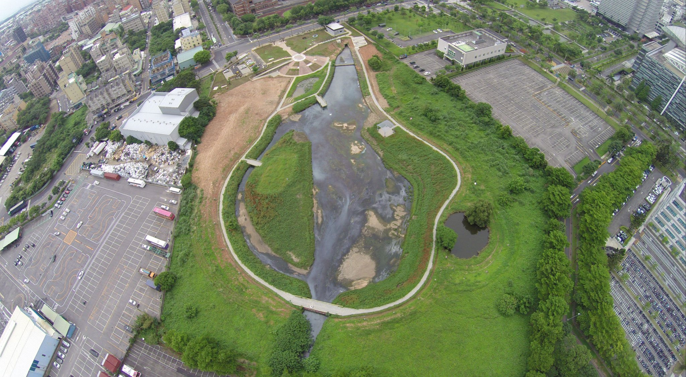
山尾滯洪池
山尾滯洪池 - 親水公園建構規劃案
相關資料- 陳雅倫議員 2022/05/18 玩水 公園|議員爭取改造滯洪池綠帶 設立親水公園
- 工程簡報 南崁溪上游水質改善工程
山尾滯洪池 改善為親水公園的 探討
請議員能確實檢討下面的問題：- 現有山尾滯洪池式是地下體結構的礫間帶淨水系統。在地面上的水應該仍是污水。 目前行走在步道上都能感受含有的臭味。想要成為兒童能“戲水”的親水公園似乎距離仍很遠。2022年暑假就想要能用？ 似乎難度很大！ 應改從長期規劃上來作業。否則在選舉時未必能加分？
- 目前整體 區域充滿“危險水域, 嚴禁戲水“, 而施工部分只見一小段 步道。很難想像一兩個月 如何由 危險水域轉換成 “親水公園”。希望議員及水務局能有所說明。
- 山尾滯洪池 面積廣闊。目前行人步道完善。但因缺少花木的景觀設計，缺少休閒特色以致很少有人會前往行成荒廢之地。應該做整體景觀設計廣植各類花木打造特色景點才能吸引居民做親子遊樂場所。 議員應該藉由此一議題與附近居民做廣泛意見交流，現階段應該做好整體規劃才是上策。
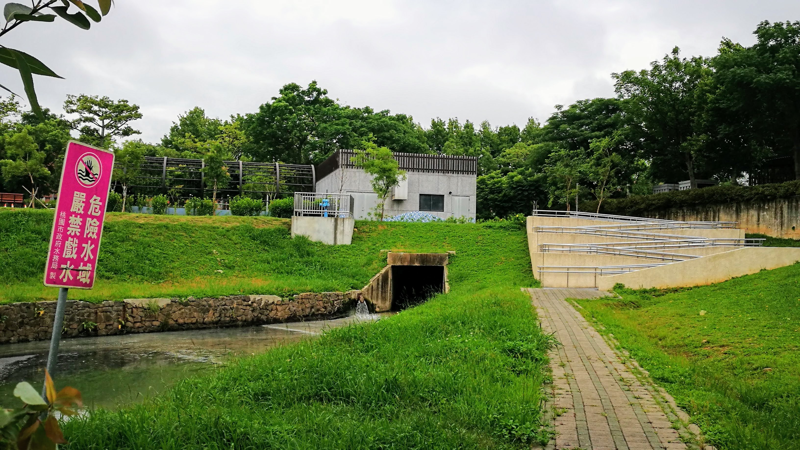
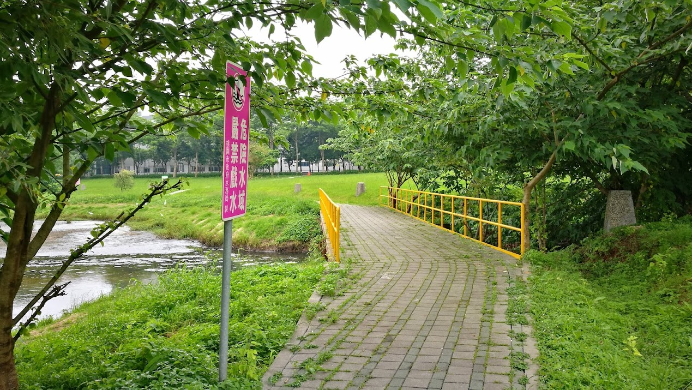
整體滯洪池目前都標示為 “危險水域, 嚴禁戲水“。
A7地區改善提案 1 - A7多功能滯洪池區域整合規劃案
依據臉書社群 A7新林口-社區網站意見調查及相關區域社群 中居民意見匯總： 提案源起：- A7重劃區 細部規劃書 2010/04 公園＋滯洪池 有17處 總面積11公頃，是A7重劃區難得的重要資源！現有規劃似乎已成為污水池, 造成蚊蠅孳生，臭氣四溢！ 也是幼童容易墜落的隱形殺手！
- 牛煦庭議員 2022/04/19 第七會期對水務局質詢案 - A7都市計畫缺漏的情況下，公園綠地不足，要求市府優先評估公滯一、公滯四、公滯六、公滯九等四座鄰近聚落的滯洪池「濕式改乾式」，使居民能實質享有綠地公園。
- A7 重劃區居民廣大迴響：開發公園綠地增加兒童遊戲場所是A7居民2022年前三大願望之一。 公園兼滯洪池用地是地方難得的自然資源。 A7居民需要超越 A8,A9 的是市府規劃與執行力！ 桃園市在此8年期間中央經費第一優先的支援下, 在滯洪池的規劃上沒有輸給高雄市的理由。在水務局的規劃能力上也沒有輸給屏東縣的理由。
- 總招集人/共同招集人：牛煦庭議員/歡迎其他龜山議員加入成為共同招集人 , 協同招集人：A7 四個里長。
- 執行團隊：包含但不限- 2022地方選舉所有參選人, A7社區管委會成員, 成立A7居民志工專案團隊 等。
- 經費來源：請檢討現行市府預算來源，並同時爭取 桃園市府參與式預算
- 執行規劃：需要由議員會同水務局人員並協同相關社會局等 作出整合性規劃。譬如 公滯01 公滯04 是位於排水幹道之上是否能做乾式滯洪池 有待水務局專業判斷！
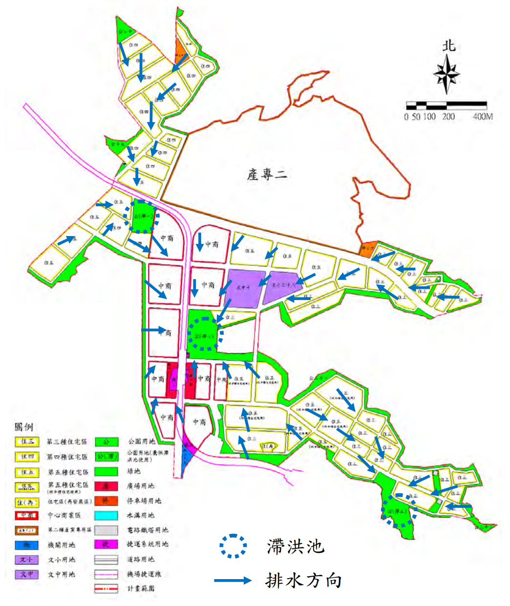
對滯洪池形式 意見調查統計
居民期望市府能請專家做全區域的整合設計。能夠兼顧多功能滯洪池設計包含同時有蓄水, 公園綠化及兒童遊戲場所等功能。規劃過程應該讓居民深度參與並廣泛徵詢居民意見。2022/04/27日票選統計
- A.乾式-兒童遊戲場 260票
- B.濕式-生態公園 150票
- C-濕式-儲水池 35票
- D.乾濕結合-蓄水池+停車場 41票
- E.乾式-滑板/越野自行車運動場 33票
- F.乾式-寵物公園 17票
- G.濕式-循環水噴泉＋蓄水池, 過濾儲存水改善水質 15票
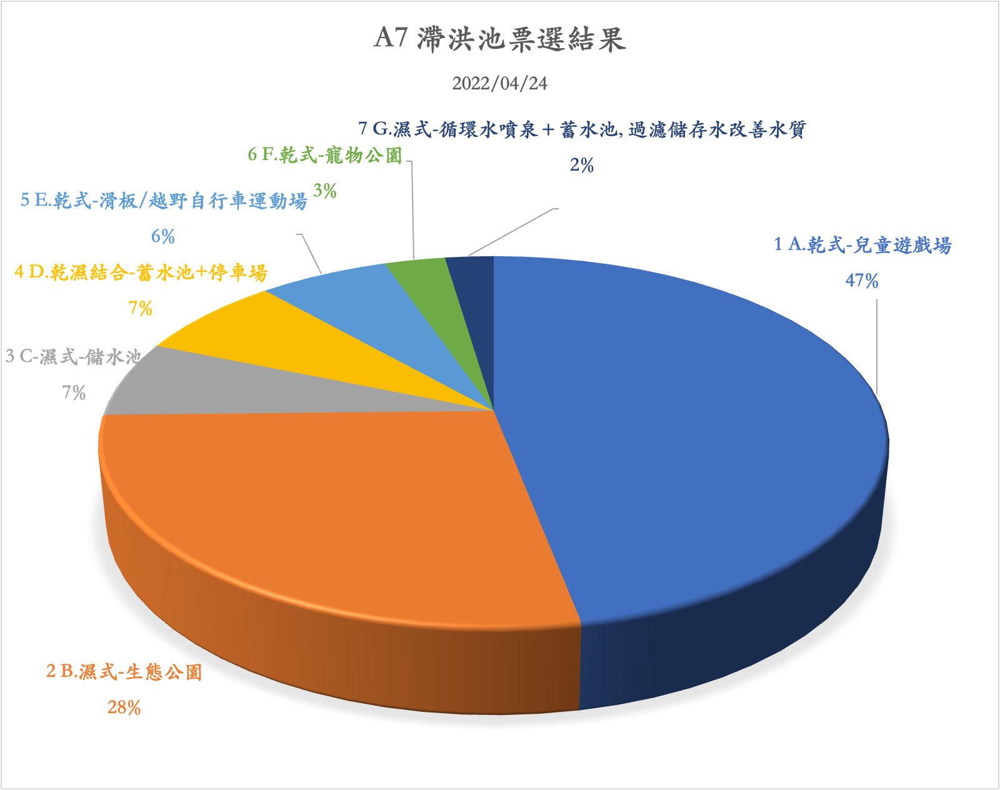
有哪些管道能實現居民期望：你還不知道嗎？市府預算是可以民眾自己來規劃的
桃園市參與式預算 是由各機關評估擬定推動議題，民眾提供提案方向、決定預算用途，再由市府整合協調出具體可行提案後投票表決並執行，讓平時沒有機會參與政府決策的民眾，可以透過參與預算的方式，表達本身需求及訴求。 ⠀而推動的議題主要有8個方向： 公園綠美化、社區營造、景觀改善 、社福扶助、橋下空間活化、回饋金使用、文化觀光、市民卡應用。
這個政策不僅讓民眾可以自己決定需要什麼社區服務 也讓市府把業務、建設、預算資訊公開透明民眾要好好把握機會呀！只要您願意提出想法，市府會協助把提案落實。
民主社會是人民來做主。 當政府未能做好公僕的工作, 至少讓我們“頭家”自己來規劃地區的 公園+滯洪池 建設吧！ 請參考相關資訊
- 桃園市 參與式預算網
- 臉書 桃園公民參與 社群
- 中央大學 臺灣桃園市參與式預算的個案分析
A7 區域建設提案
響應牛煦庭議員 2022/04/19: 第七會期單位質詢水務局 - A7都市計畫缺漏的情況下，公園綠地不足，要求市府優先評估公滯一、公滯四、公滯六、公滯九等四座鄰近聚落的滯洪池「濕式改乾式」，使居民能實質享有綠地公園。在臉書上的票選活動 於2022/04/20開始請踴躍前往投票
依據 A7站區開發案興辦事業計畫-第二階段
- 公園用地 - ５處 總面積 2.64公頃
- 公園兼滯洪池用地 - 17處 總面積 11.09公頃
- 綠地 - 重劃區邊緣 計畫面積 3.60公頃
- 廣場用地 - A7 捷運站兩側 總面積 1.32公頃
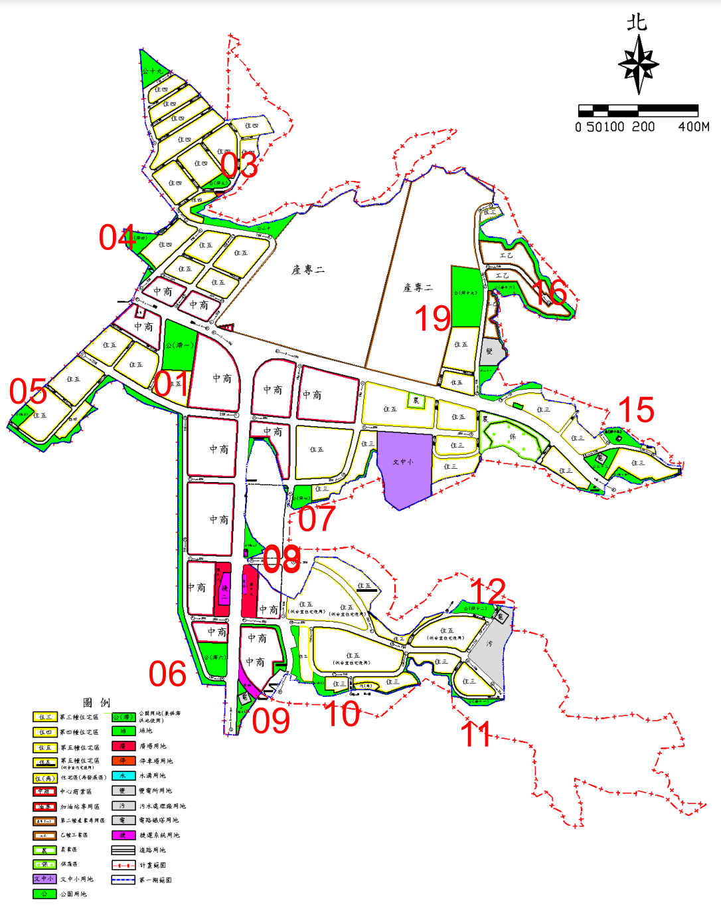
龜山 A7重劃區 現有滯洪池 17 處 現況
林口滯洪池如何改善的
依據 今日新聞 2019/05/08, 林口區目前有28座滯洪池，其中17座已活化為公園空間。 新北市府思考將滯洪池變身為適合民眾休憩使用之公園空間，除有效降低水患威脅，更能提升周邊居民生活品質，讓滯洪池由單一滯洪功能，轉變為汛期防災、平時休閒之多功能空間。 後續將遍植櫻花並設置遊戲與運動器材，成為長輩與小朋友休閒娛樂的好地方。滯洪池的改善方向
其中 公園兼滯洪池用地面積最大數量也最多， 如果善加利用包含採用乾式滯洪池設計可以將滯洪與兒童遊戲/公園綠地並存。 將可大幅改善A7居民生活品質。滯洪池的建設經費相對不高。如果能讓區域附近工業區廠商空污短時間無法有效改善的現況下, 應將空污製造大戶的空汙稅直接回饋地方綠化建設。 當建商建設時期無法有效管理作業人員亂丟垃圾的狀況下，也應讓製造地區垃圾的建商提供部份懲罰性經費。
滯洪池的效益
滯洪池的種類很多，有乾式滯洪池、濕式滯洪池、停車場、屋頂、土堤等等。 滯洪池具有以下幾項效益： 資料來源 屏東縣政府- 提供龐大滯洪量，兼具蓄水功能：滯洪池除了扮演調節區域性排水水位的功能外，超大的的蓄洪量，也大大降低溪（河）水溢堤的壓力，平日的蓄水又可涵養水源，成為生物的棲地。
- 溢流堤設計自動調控進出流時機及水位：搭配區域性水文及排水系統，透過溢流堤設計高程，決定滯洪池進水時機，調節不同水體之水位，避免溢流達到防災效果。
- 採用重力流設計，無需人為操控亦能發揮滯洪功能：近來設計之滯洪池具有自動溢流滯洪及自動出流排洪的功能，不需人為操作或抽水機組抽排，在重要時刻也能100%發揮滯洪功能。重力流的設計除了節省設施及後續的維修費用，更重要的是可以避免抽水機組故障或人為操作因素的影響，造成無法滯排的不必要損失。
- 兼顧自然生態及低維護管理功能：現今滯洪池設計之初，就導入「生態系統自我組構」及「低維護管理」規劃設計原則，採滯留式綜合型人工濕地設計，不引入過多之人工設施，給予濕地自然演替之空間與時間。
- 創造多元附加價值：公有設施用地闢建滯洪池，降低土地徵收成本，透過多目標開發使用，賦予滯洪池兼具滯洪、景觀休憩等多功能複合式都會生態公園。
乾式滯洪池 範例
乾式滯洪池是最常用，也是最便宜的一種滯留結構。平常它只是一塊低窪的空地，暴雨時才發揮貯水的功能。- 自由時報 2021/12/08 高市首座多功能滯洪池 溜滑梯、滑步賽道2021/12/20啟用
- 中華顧問公司 多功能山區滯洪池 以臺北市金瑞治水園區為例
生態滯洪池 範例
依據高雄市水利局 資料生態滯洪池是在傳統的、功能單一的調洪沈砂池、雨水調節池的基礎上發展而來。它通常結合綠地和水體進行設計，占地面積大(幾公頃至幾十公頃不等)，常設於流域內的洩水區、洪泛區或高灘地等易受淹浸的區域，以利於暴雨期間容納暴雨逕流。
生態滯洪池能夠降低洪峰流量、延緩峰值出現時間以及增加入滲能力。暴雨過後，釋放出積蓄的雨水量，又可發揮海綿體的作用，因此也稱為滯洪蓄澇型人工濕地。設計生態滯洪池整體規劃很重要，參考附近環境景觀整體規劃，對滯洪池進行兼具景觀、休憩功能的規劃，賦予滯洪池生命力，構成的「水綠複合系統」。此外，滯洪池現階段規劃還考慮場地的長遠使用目標及未來建築的構建，滯洪池在設計時儘量避免結構體，利於建築的基底施工。
生態滯洪池儘可能減少硬質結構設施，邊坡提供主要的安全需求，輔以植物材料以提供美觀和良好的水域生態環境，採用植物、木材和石材等天然材料保護河岸，提供整體穩定性。池邊用鵝卵石堆砌緩坡代替傳統圍擋，創造出多樣性的孔隙構造，並用土壤填滿卵石縫隙，以達到緩慢滲透排水的能力。滯洪池工程引入「親水河畔」的設計概念，鋪設碎石環繞步道、建石板橋，為附近居民提供良好的親水空間。
相關範例
- 痞客邦 2021/08/26 台中秋紅谷公園, 2021/02/03 秋紅谷
- 上報 2020/12/22 滯洪池具防汛休憩多用途 高雄15座居全國之冠
- 壹讀 台灣城市治水妙招——生態滯洪池
滯洪池兼停車場 範例
高市打造全國首座十全滯洪公園加智慧立體停車場，兼具防汛、停車與觀光功能。 丹麥建築設計團隊《THIRD NATURE》 提出了一個新的概念計畫名為「POP–UP」。 由透視設計圖可以看見，由 POP–UP 計畫構建出的大樓由下而上分別為蓄洪池、停車場和綠地，利用阿基米德浮力原理（或稱浮體論），POP-UP 可以儲存大量洪水，並同時提供可用的浮動空間。- 自由時報 2019/11/01 十全滯洪池兼停車場
- T客邦 2017/12/31 一次性解決都市綠地、淹水和停車場不足等問題 《Third Nature 》發表遇豪雨可漂浮的停車場！
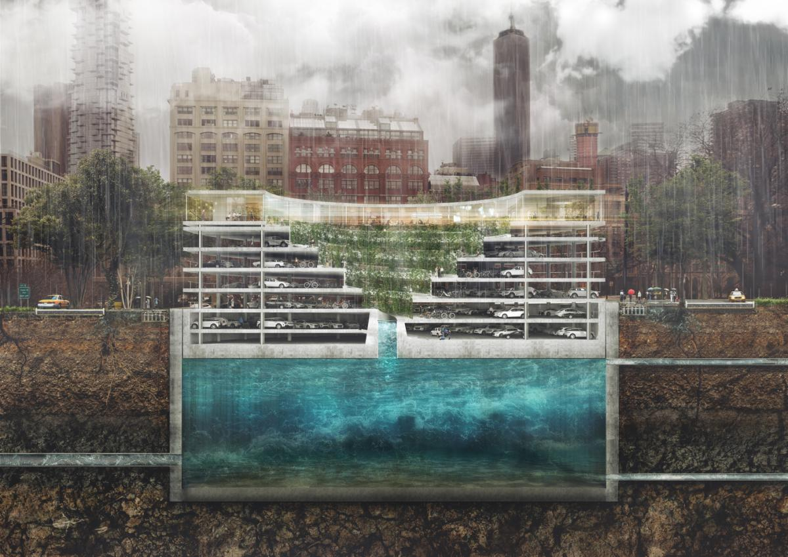
停車場樓層在平常的時候可供人使用，但若到豪雨，停車場下方的蓄洪池將發揮儲水功能。A7 公園兼滯洪池 規劃圖
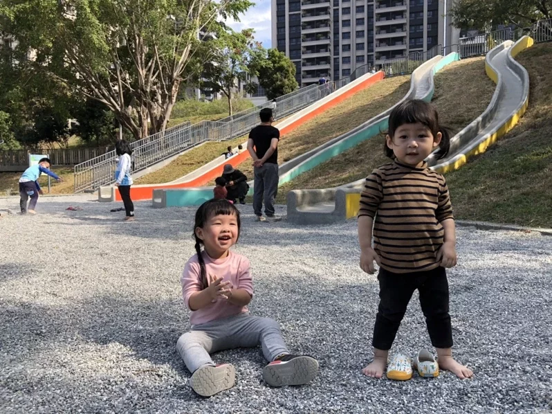
高雄首座滯洪池遊戲場2021/12/21 正式啟用，A7的滯洪池是否也能如此設計? 圖片來源： 聯合新聞網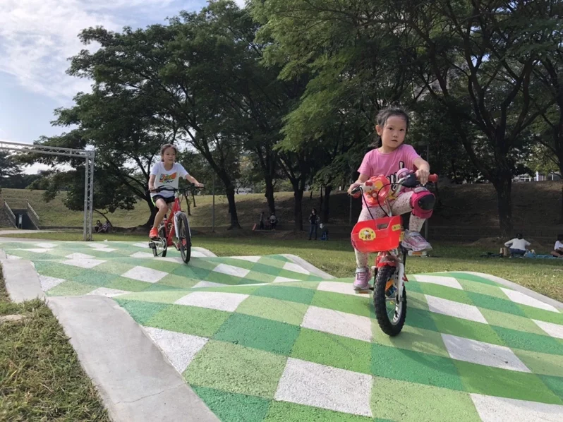
滑步車賽道則位於池底，如果A7的滯洪池也是乾的就不會是製造蚊蠅的污水池或兒童不宜接近的危險區而是兒童的歡樂遊戲場所！妳/你還不來按讚支持？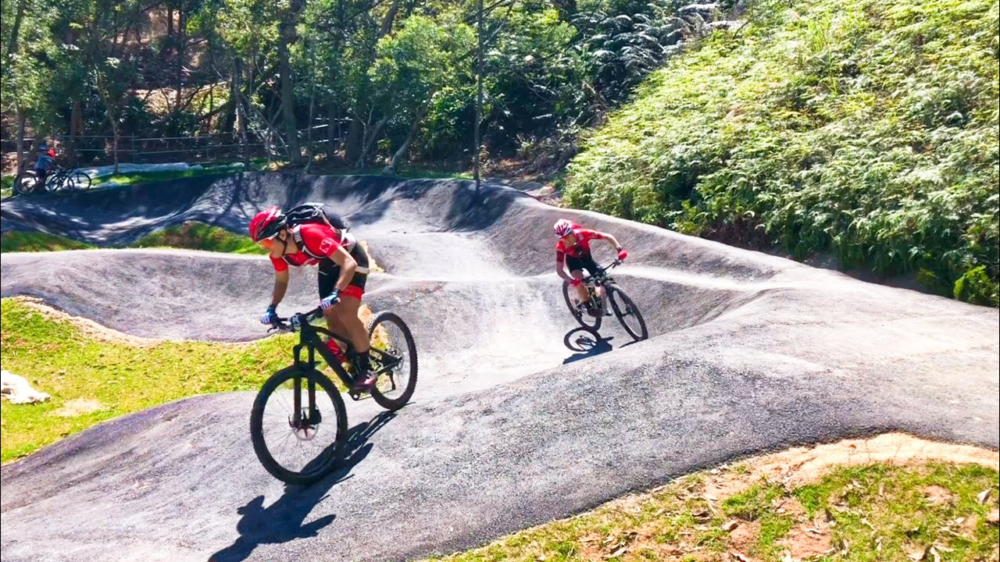
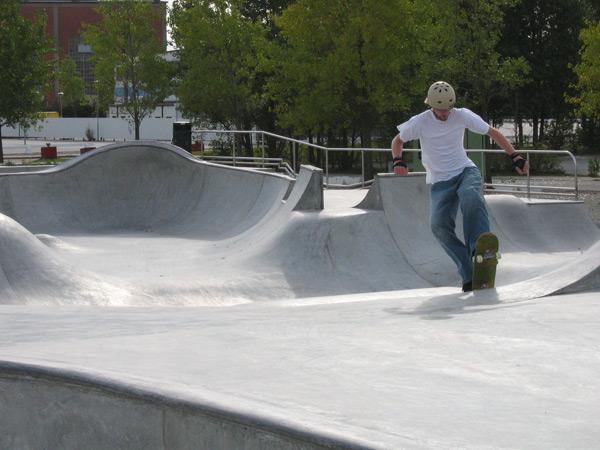
滯洪池兼具運動功能, 多用途開發範例，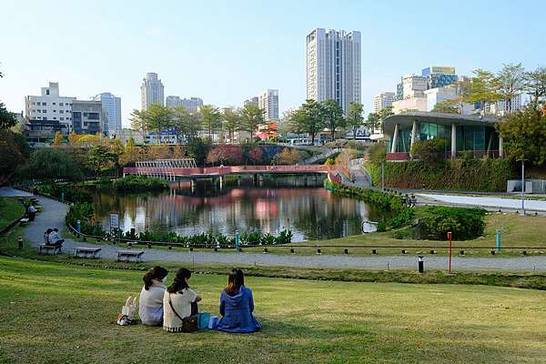
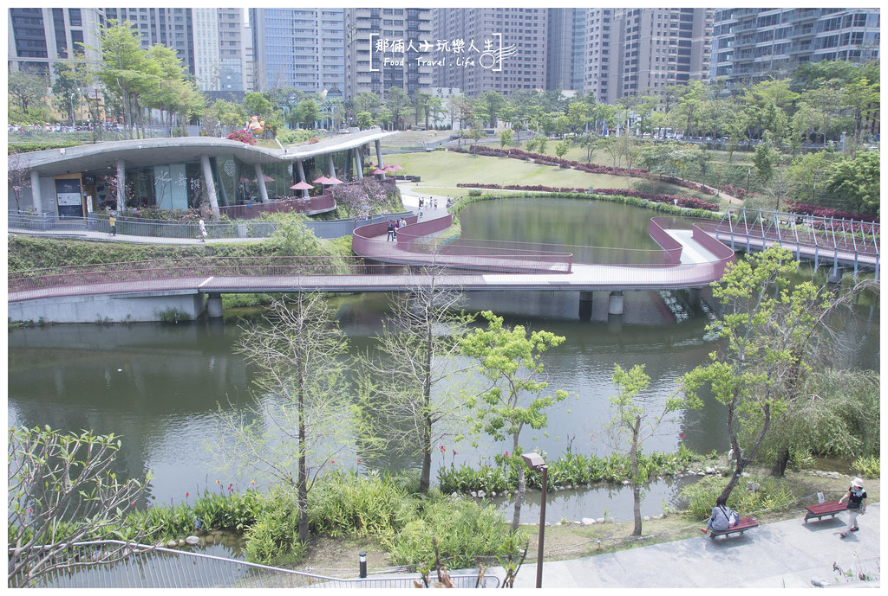
台中市秋紅谷生態滯洪池 將休閒步道架設在滯洪池之上充分利用都市空間，生態公園＋滯洪池設計成為地方綠色優質環境開發的典範。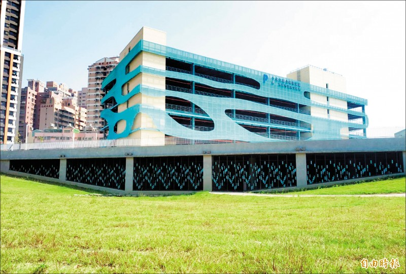
高雄十全滯洪池兼停車場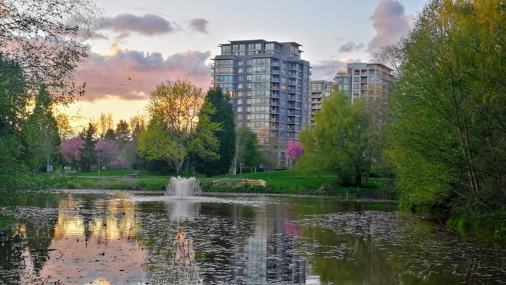
在滯洪池中設立噴泉, 兼具水循環過濾功能。 減少臭味發生，最好使用太陽能噴泉。 周圍種植特色花卉將成為季節大卡景點！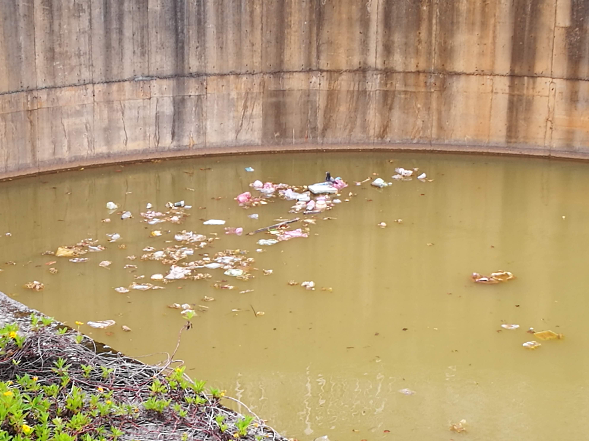
這是我們現有 蓄水功能為主的滯洪池：常常是漂浮垃圾成了蚊蠅孳生場所，也是兒童可能跌落的高度危險區域。 為何不能是上面的多功能設計？是否有專家能協助區域性整合規劃？我們是否能許個願， 共同打造一個 A7 未來的 大湖公園! <- 請點擊揭曉
A7地區改善提案 2 - A7景觀大道 規劃案
相關資訊：- 北健活力 2022/05/18 玩水 公園|議員爭取改造滯洪池綠帶 設立親水公園 陳雅倫議員 爭取在山尾滯洪池旁綠帶增設親水公園方便民眾玩水
- 綠地用地: 37.70公頃
- 綠地用地+兼供道路使用: 0.97公頃
- 綠地用地+兼供水土保持設施使用: 0.26公頃
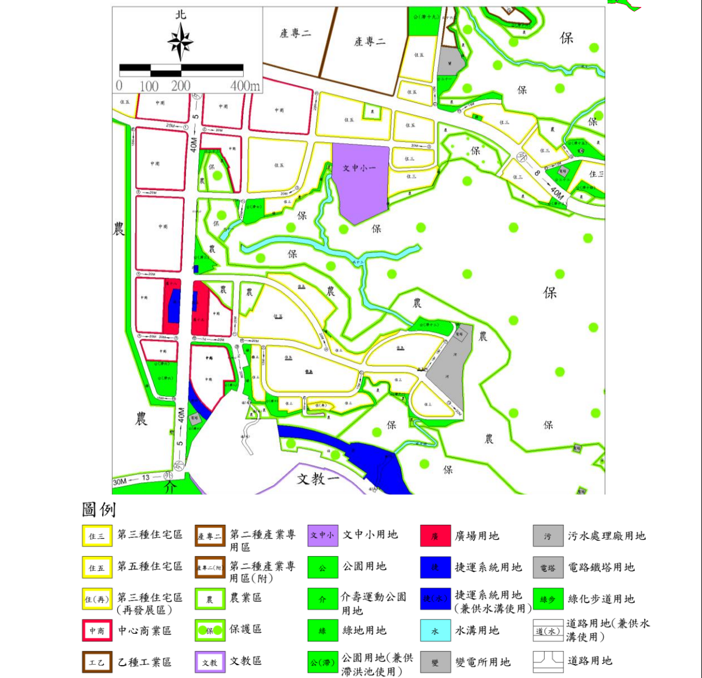
A7 重劃區的建築 都有退縮保留 道路兼綠地的規劃。 但現有公有行道樹 + 社區退縮保留的 花園綠地 其實是重劃區的重要資產。目前種植的行道樹主要是光蠟樹
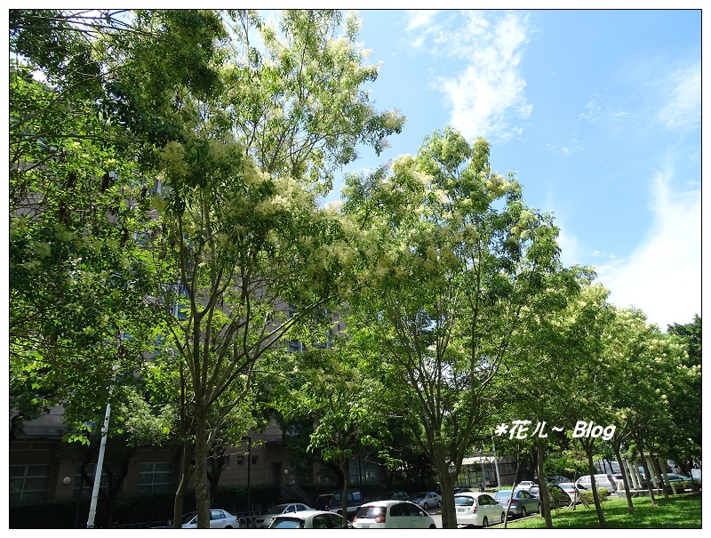
行道樹相關討論
- 桃園市 2019/03/16 這5種行道樹最顧人怨, 快來認識桃市行道樹, 桃園市行道樹栽植要點
- 台北市 行道樹資訊網, 行道樹樹種選擇原則, 常見的40種行道樹
- 眼底城市 2020/11/11 行道樹種植修剪大哉問： - 如何在街道「眷養」屬於森林的巨人？
- 行道樹物語
- 營建署 市區道路人行道設計手冊 2003/03
- 今日頭條 2018/03/20 城鄉行道樹需求巨大，什麼樣的樹種更受歡迎？
- 章錦瑜 論台灣常見之爭議性行道樹2009/04/16
居民票選結果
2022/05/14 紀錄行道樹會衍生的問題
- 落花滿地、甚至黏著地面不易清理而使環境髒污疑慮的樹種：美人樹, 大花紫薇
- 樹幹的尖硬瘤刺會傷人疑慮的樹種：美人樹
- 樹木會感染嚴重病虫害，至今尚未完全控制的樹種：台灣欒樹於生態環境失衡時，植株體常爬滿紅色的小昆蟲「紅姬緣樁象」，令民眾厭惡。
長慶二街 黃花風鈴木大道 及 長慶三街 櫻花大道的構想
部分社區已經向桃園市政府 農經課申請 所需樹苗交由委外的園藝公司做樹苗培養。 之後再進行移植。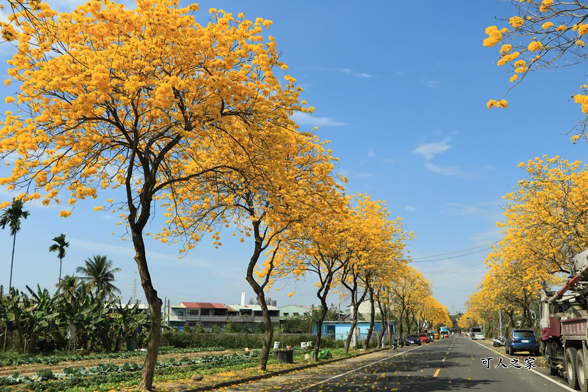
未來的長慶二街 黃花風鈴木大道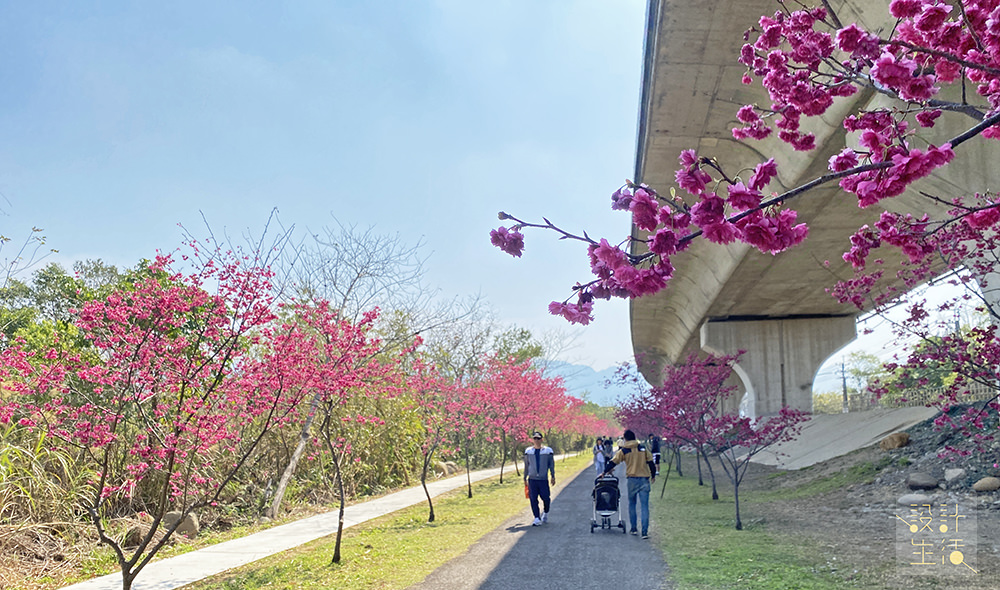
未來的長慶三街 吉野櫻花大道選舉年的許願池
A7重劃區 景觀大道的 整合規劃案- 目前已進駐社區，因原有社區建築退縮產生的綠地已經種植花木。當重新規劃後需要先移開，會有作業費用及可能的損傷。最好是在社區尚未種植花園之前就能依規劃改種特殊景觀樹種。
- 最好是A7重劃區整體規劃，需要有市府/議員協同里長來做整合意見統籌。單一社區難以處理整合性區域景觀規劃。
- 龜山苗圃 不應只是 養野狗的地方，應該充分利用 龜山苗圃的專責功能，培育地區所需苗種。
- 景觀大道所需作業費用 相對市府預算是九牛一毛。 應該讓桃園市 參與式預算能真正有執行效能。讓議員里長多用點心爭取。在選舉年 居民想看到不一樣的候選人！
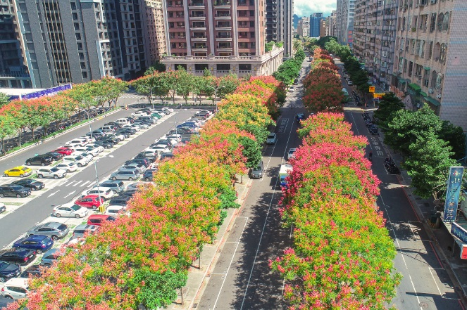
不要讓林口的 臺灣欒樹 大道專美於前。讓A7居民在選舉年 許個心願罷！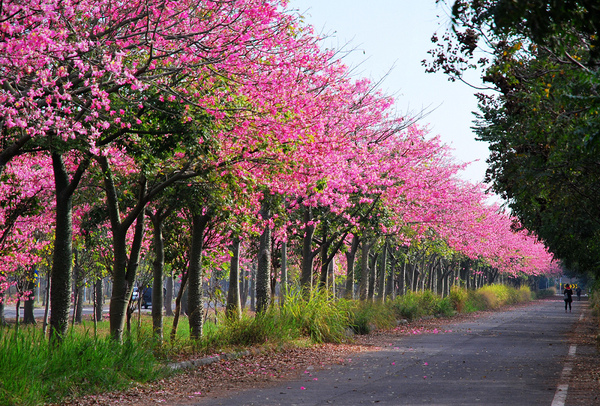
許願1 - 美人樹 大道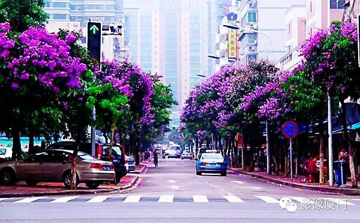
許願2 - 大花紫薇 大道許願3 - 黃金風鈴木道
許願4 - 櫻花 大道
許願5 - 落羽松 大道
網友也來 臉書 A7新林口-社區網站 社群 許個願吧！ 並請加入社群, 支持地區公益網站。
龜山區行政資訊
A7 重劃區涵蓋的龜山行政里{kind=link}
- 文青里 5個建案 1,450戶: 竹城宇治, 竹城明治, 富宇天匯, 新未來1, 櫻花澍
- 文化里 4個建案 1,159戶: 友文化, 文華天際, 合遠新天地, 富宇悅峰
- 樂善里 30個建案 12,023戶: 其他 30餘 建案
- 長庚里 6個建案 1,350戶: 玉子園, 和發大境, 奇幻莊園, 樂田田, 樂捷市, 台北國際村
龜山區 各行政里區域圖
桃園四大行政區人口成長
A7 重劃區人口成長趨勢圖 及相關4個里的相對人口成長: 其中樂善里佔A7重劃區最主要的行政里。在110年起人口快速成長。110年6月較去年同期成長 42%.
每戶平均人數比例上由原有2.6轉變為2.2，表示住戶為新婚夫妻的為主要族群
2020年 台灣人口首次進入負成長。每戶人口也逐年減少到 2020年的 每戶 2.64 人。
2020年 台灣人口首次進入負成長。每戶人口也逐年減少到 2020年的 每戶 2.64 人。
里長交流
選擇類別
{{post.type}}里長 - {{post.title}}
- 服務處: {{post.address}}
- 電話: {{post.telephone}}
- 網站
2022 地方選舉 - 市議員
對2022年的市議員選舉, 選民應該先檢討一下 現有議員4年來的績效考評。 希望所有現任龜山市議員都能提供充分的績效報告讓選民做公評的績效審查。 以下是以 新北市議員的案例做示範：蔡淑君議員在 2018年新北市第二選區(包含林口區、五股區、泰山區、新莊區) 拿下 3萬8千餘票 11.31%的得票率。 是新北第二選區的最高票。 每當在“林口大家庭”臉書社群有民眾反映的問題，往往都會有 “議員阿姨”的第一時間回應。 如果檢討 淑君阿姨 的問政績效 可參考 蔡淑君議員網站: 包含
- 建設集錦: 紀錄蔡議員 每年關切的 “林口大小事”，其中篇幅最多的是 打造花園城市篇。 看到的是讓A7居民仍在努力呼籲仍無回應的 各式公園，兒童遊戲場，乾式滯洪池，運動公園等。數量之多讓龜山人後悔沒住林口。 也有即時動態資訊說明規劃改善中的公園，尚未重新規劃的。 另外所關注的項目包含 便捷交通篇，公共建設篇，教育社福篇等等。都依據年度清楚條列。
- 地方大小事： 也是逐年，逐條說明為地方所做的貢獻。 每個項目都有佐證資料 供查閱。
- 選民信箱： 提供選民提報問題與選民交流的直接管道。 選民能藉由網路“請託大小事” 並且可查詢各項請託事務處理進度及結果。 對社區問題社區管委會也能提出需求， 在會勘紀錄中也是逐項條列各項會勘紀錄。
- 活動集錦，新聞影片，及市府公文：也都提供詳細的網頁資訊可供瀏覽或搜尋。 也就是不用等年度終了或競選時段。選民能隨時了解議員的問政績效。並保持與議員的暢通雙向交流管道。
龜山區議員的績效考察
希望在2022年 地方選舉前, 龜山區議員都能提供 4年來的問政績效。讓選民能有理性的選擇依據，希望釐清的項目包含：- 各議員是否有相關資訊網站，能夠清楚展現問政績效？ 目前下面收集到的只有臉書/紛絲網頁，資料都屬於社交網站的流水帳。如要查詢前4年 各類/各地區的問政內容會有相當難度。應該由議員主動整理與提供。
- 已有議員提供“向市民報告”的電子書式整理。固然是很好的開始，但該電子書在手機或電腦上都不易閱讀。 內容往往只有一句話，如龜山公墓遷移進度追蹤，要求水務局研擬A7滯洪池濕式改乾式，增加率地活動空間等。 選民希望看到的是績效！ 哪些是實際達成的項目，如是進行中需要有預計達成的時間，具體內容及有效的佐證資料。
- 部分議員提供的問政紀錄影片無法做好 依據問政策略方向分類，及績效指標達成說明。多數議會質詢難以看出達成哪些具體成效。選民難以感受質詢達成的成效在哪裡？ 如A7臭味問題許多議員都提出質詢，但似乎毫無實質結果？
- 龜山區議員除了沒有網站式資訊平台提供問政説明，也缺乏接收選民要求的管道。也許可以使用Direct Messanger, DM. 但似乎都沒有能接收“社區”管委會需求的公開平台？ 讓A7重劃區各社區能整合意見，做集合有效率的溝通管道。 也很少見議員能藉由社交平台諮詢選民意見，做地區意見調查。尤其像 公共運輸等議題需要做好“選民需求”的充分瞭解。
- 要求每位議員都能像 林口阿姨議員，巨細彌遺地處理地方大小事，確實是苛求。 但目前龜山區議員這4年問政“績效” 仍須各議員能提供較易查詢的管道及方式！ 如果以上敘述有誤請提出就會更正。
2018 市議員選舉 紀錄
上龜山有4成3的人口，沒有理由一直被龜山區行政作業上視為邊疆地區。各項區域建設不能合理分配給上龜山。有待2022地方選舉時讓上龜山居民展現踴躍有效的投票實力。
2018年 議員選舉 約1萬票就能當選, 而A7重劃區4個里現有1萬5千餘戶，如果每戶有兩個投票權 則有 3萬票！ 必須將每張票都能投給能服務上龜山的參選人 是否能支持2位議員勝選！ 就看選民自己是否能於選前清楚認識哪些是會為上龜山積極服務的候選人？
2022/04 上龜山與下龜山 人口比例
民意代表交流
選舉紀錄 2018年桃園市 市長及民意代表選舉結果- 桃園電子報 2018年桃園市長、市議員選舉結果
- 國家發展委員會 開放政府, 公共政策：網路參與平台
市政評比
-
天下雜誌 2021 縣市長滿意度調查
鄭文燦市長 2021 排名第10, 75.5分, 相較2020 排名第3 退步7名。
侯友宜市長 2021 排名第5, 79.7分, 相較2021 排名第2 退步3名。
議員質詢 引起民眾有感的案件
-
牛煦庭: 第七會期單位質詢紀錄：水務局 2022/04/19
一、文明路淹水改善進度追蹤：要求短期方案，也就是銜接文明路和滯洪池的箱涵加寬案儘速完工。市府預期年底完工，面對即將來臨的汛期，則會加強監測，並備抽水機隨時調度。
二、龜山水資源回收中心加蓋建議：既然水資源中心將有ROT案，要求水務局根本解決臭味問題，請水務局將「加蓋、負壓」措施列入ROT範圍，莫讓周遭居民成為二等公民。
三、A7都市計畫缺漏的情況下，公園綠地不足，要求市府優先評估公滯一、公滯四、公滯六、公滯九等四座鄰近聚落的滯洪池「濕式改乾式」，使居民能實質享有綠地公園。 - 牛煦庭: 汽車強X人行道 2020.04.09桃園市議會第二屆第3次定期會【警察局】
- 陳雅倫: 2022/05/03 爭取 龜山文青郵政代辦所, 提供周邊社區便民的郵政服務，
牛煦廷 議員 2021/12/30: 總質詢持續要求下，在2021年的9月7日，市府以屢次違反操作許可，情節重大，裁定華亞科內的中環三廠停工處分！
牛煦庭議員 法律諮詢服務
法律諮詢服務
桃園市府交流
中央資訊網
-
健保署北區業務組 桃園聯絡辦公室
- 地址 ： 桃園市桃園區介壽路11-4號
- 電話：03-433-9111
- 辦公時間： 08:30 - 17:30
-
勞工保險局 桃園辦事處
- 地址：330桃園市桃園區縣府路26號
- 電話：03-335-0003
- 辦公時間： 08:30 - 17:30
市府資訊網:
- 桃園市政府:
- 桃園市政府環保局: 環境品質專區。, 環保主題-空氣污染防制 護守桃花源
- 行政院環境保護署: 空氣品質監測網
- 桃園市政府文化局: 熱門活動, 桃園社造資訊網 - 社區營造 包含 健康社區的營造, 培養具有網路能地的人才, 社區綠美化, 老舊空間活化等。
- 桃園市消防局：即時訊息，桃園市民防災手冊, 防範一氧化碳中毒 宣導
- 經濟部中央地質調查所：
- 中央氣象局：桃園天氣專區，一週天氣預報
- 桃園市: 水情資訊網
- 台灣各水庫即時水情
智慧城市
- 桃園智慧城市資訊網： 市府官網
- 亮點計畫：桃園智慧城市 十大主題＋行銷倡導
- 未來城市：桃園市2019年拿下首獎的「ICF智慧城市」，究竟有哪些特色？ 2020/04/07
桃園: 長期照護
- 桃園市政府 衛生局： 桃園長照 2.0
桃園市政府作業窗口
- 財政部北區國稅局：
- 地址：330桃園市桃園區三元街156號
- 電話：03-339-6789
- 辦公時間: 星期一至星期五 上午8:30-12:30 下午1:00-5:00
- 龜山區公所：
- 地址：33541桃園市龜山區中山街 26 號
- 電話: 03-320-3711 ~ 6
- 辦公時間：星期一至星期五 上午8:00-12:00, 下午13:00-17:00
- 龜山戶政事務所：
- 地址：33346桃園市龜山區自強南路99號
- 電話：03-320-1922
- 辦公時間：星期一至星期五 上午7:00至下午17:00
- 延時上班服務：每週六09:00至12:00
- 監理服務網
-
桃園市環境清潔稽查大隊
- 大型傢俱清運申請: 龜山區 申請電話 03-350-3877, 地址 龜山區中山街26號
- 髒亂點查報：桃園市政信箱 / 市政建議 / 噪音, 污染及環境維護 髒亂點查報
- 亂丟垃圾拍照檢舉管道： 檢舉違反廢棄物清理法
-
桃園市政府警察局：
交通違規檢舉專區
檢舉說明- 違規車輛號牌：違規車號清晰可辨及車輛顏色。
- 違規事實：應攝入相關標誌、標線或地點；如為標線，顏色須清楚可辨；車輛駕駛人是否在場（以辦識該車屬臨時停車或停車之狀態
- 違規時之日期及時間。
桃園市政府便捷服務
- 桃園市民卡：
- 桃園市民卡App 下載
- Youtube: 桃園市民卡CF App篇
- 桃園網路e指通: e指通網站， 跨區服務網
- 福利資訊平台：社會局網站
- 旅遊資訊服務：桃園觀光導覽網
- 水情看桃園：
- 水情資訊網
- 水情看桃園 Android App, iOS App 下載
- 稅務便民服務：itax 便捷服務e卡通，稅務秘書即時通
- 地政便民服務：地政便民服務，電子門牌定位系統
- 1999 服務 - 線上陳情及查報系統： 桃園市政府研考會 1999 簡介
- 民眾公文查詢，政府資料開放平台：
- 罰鍰規費查詢，停車費簡訊及電子郵件通知：
- 免費無線上網 iTaoyuan Wifi：iTaoyuan 上網服務
- 地政便民工作站：桃園地政事務所
- 消費爭議申訴及法律諮詢服務：法律資訊時間及地點
- 交通違規便民服務：交通裁決 e指通
桃園市 手機APP
- 110 視訊報案: Google Play , App Store
- 桃園市政府：加入LINE，加入FaceBook, 加入Instagram
- 中油桃煉廠空品即時監測：Google Play, App Store
- 環境即時通：Google Play, App Store
- 桃園輕鬆Go：Goople Play, App Store
- iBus_桃園: Goople Play, App Store
- 桃園垃圾車：Google Play, App Store
- 桃園警政：Google Play, App Store
- 桃園美食地圖：Google Play
- 水情看桃園: Goople Play, App Store
- 桃園親子服務網：Googl Play, App Store
- 桃園微笑單車：Google Play, App Store
- 桃園市YouBike: Google Play, App Store
- 桃園地政E管家：Google Play, App Store
- 桃園自由行旅遊: Google Play, App Store
- 桃園文化資產: Google Play, App Store
- 桃園搭捷運: Google Play, App Store
- 桃園路邊停車格資訊查詢: Google Play
- 國軍桃園總醫院：Google Play, App Store
- 桃園環境e點通: Google Play, App Store
環境衛生管控
2022選舉年 A7重劃區環境清潔 稽核
近三年 A7重劃區的 街道環境清潔一直是居民所難以忍受的髒亂！ 為何龜山環境與林口有天壤之別？ 曾引起廣大居民熱烈的迴響。 但在2022/05/20 稽核A7重劃區全區域的環境清潔 狀況 似乎 大幅的改變！ 記錄的下面照片中 "上龜山已經脫胎換骨了嗎?"A7 重劃區 環境清潔 考核提案
- 主旨: 為建立 A7重劃區 區域性 乾淨整潔的生活環境。 由居民建立自主環境考核機制, 督促整體區域的環境整潔作業。
-
試行辦法：
- 在 2022/06 - 2022/11 半年期間，建立網路環境考核機制。由全體居民每月都能做出對區域的環境清潔滿意度評分。
- 評分依據A7重劃區內四個里分別 評審，將作出四個里的每月清潔滿意度考核績效。
- 居民評分表單如下： 即日起居民就能開始提報評分， 每月總結考核結果。居民每月可更新下面表單一次，在月底會記錄該月統計結果。
A7 重劃區 環境清潔 意見調查
您可每月都評分一次龜山與林口環境管控比較
同樣是文化一路，在龜山段及林口段的環境管控比較如下（抽樣時間 2021/11/09)文化一路 在龜山段 靠樂善里一側，充滿了樹葉,掉落樹枝之外。沿路有各式垃圾。部分路段也有固定的路邊營業小吃攤。每日都遺留大量的垃圾。 文化一路 龜善段 希望制度面檢討，龜山人不想要有如此的生活環境！
文化一路 林口段的環境：幾乎找不到任何 樹葉,紙屑，更不用說是 便當盒，飲料瓶等垃圾。 為何新北市能做到環境管控？ 他們多久清掃一次？環保局人力配置比桃園多，還是新北人文化素質較好？ 文化一路 林口段，讓人羨慕的環境整理！
在臉書 2021/11/09 18:02 的貼文, 立即就收到牛煦庭議員的回應。並於次日就也經由市府相關單位處理完畢。需要感謝 牛議員及市府環保單位，尤其是清潔人員你們辛苦了！
市容的維護 需要大家一起來維護 對於大型傢俱清運申請，檢舉違反廢棄物清理法案件提報，及髒亂點查報 網路作業都分別放在 桃園市府交流網頁，及 新北市府交流網頁。市民可自行參閱及使用。 改善後的文化一路，龜山段！是否讓市民舒暢許多？
道路清潔規範
參考資料： 建議依據各市管理辦法，強化流程管理：範例如下道路清潔 管理流程要點整理：
桃園市議員應該依據 管理流程對市府 環保作業做流程管理檢討。
實施：
- 環保局應該依道路條件、類型、使用情形、人物力等資源分配各道路清掃作業頻率, 使用的機具（機械作業或人工撿拾）。與作業優良的縣市做對照檢討。
- 環保局應該有整體環境清潔的規劃，包含所需人力，經費的編列。並須逐年檢討成效及加強有效的自動化清掃機具的配置與使用。
- 環保局應該督導所屬及市內依法負有管理維護之權責單位執行環境清潔維護工作，並就環境清潔方面之缺失及髒亂點作成紀錄。權責單位應於期限內要求髒亂點之所有權人或使用人逐一清除整理，並追蹤其執行情形，列為考核依據。
- 對於都市計畫內空地，已公告區域內道路兩旁空地、道路沿線及兩旁閒置未利用土地髒亂者，查明所有權別，責由所有權人或經管單位清理，仍未改善者，則依法告發取締。
- 各地區提報重大違規傾倒廢棄物之地點，由各權責公所列管追蹤，必要時由市府環保局派員會同公所人員定點稽查。對於污染環境衛生行為者，就告發取締之成效及其相關資料建檔列管。
- 環保局應該建立考核小組，執行平日抽查與小組稽核。
- 考核小組應該制定考核項目列表，按表查核所有環境管制項目。 落實市府主動稽查環境作業。
- 各考核稽查小組的成效，應有考核績效與成績評比。 檢討考核小組的稽查作業。
- 由市府環保局、教育處及相關單位藉由各種傳播媒體、 各項集會及透過學校、民間社團等辦理宣導及教育工作，以促進民眾自動自發清理居家環境。
- 鼓勵民眾勇於舉發違反本法令之行為，並積極參與及關心居家附近環境清潔之維護。
- 主要道路、風景區之進出道路沿線及特殊之髒亂點要求土地所有權人清理外；必要時由市府環保局僱工清理。
環境管控作業辦法草案
主旨
為A7 新林口 重劃區打造一個乾淨衛生的基本生活空間。統籌A7重劃區所有社群中對本區域環境衛生議題的討論，並推動高效率的改善行動！說明
涵蓋範圍： 將以 A7新林口重劃區 為主要範圍, 環境品質將來希開放網路評分，做滾動式修訂| 行政區 | 區域別 | 已有住戶 | 環境品質 |
|---|---|---|---|
| 長庚里 | 樂善國小生活圈 | 樂捷市, 奇幻莊園 | |
| 文化里 | 華亞科技園區周邊 | 合遠新天地 | |
| 樂善里 | 樂善科技園區周邊, 華亞科技園區周 | 富宇敦峰, 耀台北, 新潤鉑麗, 根津苑 | |
| 樂善里 | 中心商業區 | 金捷市, 富御捷境 | |
| 文青里 | 合宜住宅區 | 竹城明治 |
- 結合市政府，里長，議員 及 住戶 / 管委會，共同有效的維護此地區的環境衛生。避免在開發期間讓施工隨地拋棄物給社區居民帶來眾多的蚊蠅，蟑螂,甚至老鼠。
- 減少不當廣告，包含大型看板，路邊車輛看板及行車道中間的看板。應該鼓勵智慧城市中的電子化資訊傳遞。讓網路來取代不當的傳單張貼，大型看板的懸掛等。
辦法
拋磚引玉- 在A7重劃區地區社群媒體 中建立專題討論區， 迅速有效結合所有相關人員共同研擬方案。包含有效聯絡 所有居民，市政府相關單位，里長 及 議員 。
- 建立行動聯盟，包含公共議題的有效推動。使用如 Facebook A7重劃區大小事 1.1萬會員作為溝通聯繫。建立監督網站 如 A7新林口社區網站 ，對相關作業做系統性追蹤檢討。
追蹤
樂善國小生活圈建商 環保，社會責任及管理 ESG 評比： 依據志工收集建案工地的垃圾量所做初步評分，未來將開放公開網路評比。| 建設公司 | 開發中建案 | ESG評分 |
|---|---|---|
| 和發建設 | 和發大境, 台北國際村 | |
| 鴻築建設 | 鴻典 | |
| 佳晟建設 | 樂田田 | |
| 協勝建設 | 玉子園 |
在A7重劃區建案中，難能可貴有廠商能將建案周遭環境保持得如此整潔的建商！應該給予掌聲！
- 投資建設：禾聯股份有限公司
- 營造公司禾華營造股份有限公司
- 評等：
執行
行動方案1: 藉由Facebook - A7重劃區大小事 1.1萬成員的社群，呼籲環境衛生維護 啟動！- A7 重劃區環境清潔問題 於2021/05/11 日首次在 A7重劃區大小事 社團中提出，獲得160多個點讚與支持。
- 當天就獲得文青里-簡僑亨里長，長庚里-林俊源里長的關懷。尤其是龜山區- 牛煦庭議員 的積極協調清潔隊，5/13日就以動員清潔隊清掃樂善國小周遭區域。
- 5/15日樂捷市 環保志工開始做該區域環境的維護，在Facebook 樂捷市好鄰居 社區呼籲更多環保志工的加入。
- 執行改善的前後對照如下面輪播照片所示
改善前的紀錄照片 2021/05/10 拍攝
5/15在長慶二街收集到的，包含鴻典 90%, 台北國際村 7%,
樂田田 3%
原來的台北國際村是如此。要感謝牛議員協同清潔隊處理掉了！
 公滯3 裡的垃圾已被清理了。希望魚還在裡面。
公滯3 裡的垃圾已被清理了。希望魚還在裡面。
原來的長慶一街是如此的景觀！希望不要再見到。
玉子園施工大哥，不要再丟喔！
廣告是否可以隨處掛？
此景不想再見！
如果工地不管制，未來誰來清理？
2021/10/31 長庚里環境志工 的行動紀錄
10/31週日, 發現周遭環境變整潔了。原來是長庚里 環境志工 出動了。讓長庚里主要街道變乾淨了！ 感謝長庚里 最俊美的志工團隊。 希望長庚里能結合已經入住的社區共同維護周遭環境。 讓重劃區社區管委會能與長庚醫療社區能有更緊密的結合。讓環境衛生大家一起來維護。 讓長庚里的環境評估能由哭臉變笑臉。
社區管理交流
公共電費分攤
參考資料- 好房網 2022/04/29 回家就享受飯店級待遇？ 專家一算成本超嚇人
- 如何解決契約容量超約的問題
- 社區大樓「公共用電」哪些最耗電？
- 社區大樓公用電費過高如何節省電費？
- 社區調整契約用電 電費省更多
- 社區公共用電怎麼省?破解電費密碼 先算"用電需量契約"!
- 社區公共區域電費省不了? 竟是"契約容量"搞鬼!
- 公共用電：不屬於各戶專有部分的用電就是公共用電，如電梯、樓梯燈、地下室用電等，所以只要是公寓大廈型態，就一定有公共用電。
- 社區大樓的公共用電一般可分為2種，一種為全體住戶均可使用的一般稱為大公共用電，另一種為大樓內的某一小棟住戶專用的，一般稱為小公共用電。
- 電力公司對於公共用電的計費方式是依住戶的電表數來平均分攤的，假設XX大樓內有A、B、C三小棟，大公共用電由全體有電表的住戶平均分攤電費，A棟的小公共用電由A棟有電表的住戶平均分攤電費，以此類推每一個住戶的電表需分攤2個公共電表的費用，也因此您會發現A棟與B棟的公共電費分攤金額有出入，此乃正常現象。
- 大公共用電也可由管委會向電力公司申請全部由管委會支付, 則住戶需由管理費增加分攤大公共用電電費部分。
- 公電分攤的基礎：以電錶數量為基礎，例如本大樓共有 100戶，假設每戶設一個電錶， 那就平分 100份，與坪數無關，台電也不接受委員會依照坪數分攤的計算式。
如何節約公共用電
社區內的公設越多，相對地公用電費也會越高，電梯、健身房、會議室、冷氣、抽水馬達等等這些公共設施都屬於公電。有網友就分享幾項節省公電的方法:- 檢討公用電費的契約容量是否訂定合宜？ 訂了契約容量會節省費用還是造成更浪費？
- 可檢討大廳或其他公設各活動室空調的使用，各活動室可設使用的時間帶，使用完就得關閉，管理員要巡公設水電如樓梯間長期開燈沒人處理。
- 公共空間、大廳限定冷氣開啟溫度時間，停車場改用LED，燈管數量減半，深夜採用自動感應照明。
- 專業人員提出，新的大樓公共電費過高，問題都是「共用電梯造成的」，電梯是耗電的主因嗎？ 如果一棟樓有多個電梯，需要有智慧管控系統。
台電公用電費契約容量
台電為何設置契約容量?由於電力無法儲存，為了隨時滿足用戶的用電需求，本公司必須依據用戶申請的契約容量來規劃足夠的發、供電設備，這些設備一經投資設置後，無論用戶有無用電，供電設備之營運、維護、折舊等固定費用都會發生，故即使用戶實際使用的容量低於申請之契約容量，本公司仍需按照用戶申請的契約容量來計收基本電費，以回收依照用戶申請而設置之供電容量的固定成本。 用戶在申請用電時，應考慮各種器具用電的時機及容量，以訂定適當的契約容量。
簡單的說：所謂公用電費的「契約容量」，就如同行動電話基本月租費，若月租費設定為650元，但每個月實質只撥打50元費用，這差價600元就形同浪費了。而我們探討的「契約容量」，涵義與月租費相似，是每月依約定繳交台電公司的基本電費。
由於契約容量不同，每月固定繳交給台電公司費用也不同，夏季電價的計算方法為每年的6月1日至9月30日，基本契約容量費用是236.2元／瓩，非夏季時段，基本契約容量費用是173.2元／瓩。 當您超出契約容量時，表示違反契約，需要給付台電「超約附加費」（若超約範圍為10％以內需多繳2倍契約容量費用，10％以外則收3倍）。
契約容量設定對公用電費是相當重要，當契約容量訂定太高，而卻沒這麼多需求時，就需多繳費用，若今天我們將契約容量降低，每個月則可以省下冤枉費用。
如何查詢台灣電力公司電子帳單
- 進入台電 電子帳單服務系統 / 會員專區 ／ 用電查詢
- 查詢 歷史資訊：進入歷史帳單網頁 / 選擇各項明細
- 查詢 公設分貪明細： 母戶電號 （含大公電及小公電 的電號）, 總電費金額, 戶數, 分攤金額等資訊, 如下圖。相同資料也可直接由 台電郵寄的電子帳單中獲得。
案例說明
A7某社區 的大公共用電 及小公共用電 案例：- 案例中，公共用電雙月平均為 543.4元, 包含大公電 396.9, 小公電 142.3。
- 其中大公共用電是 346戶分攤, 小公共用電是同棟樓 39戶分擔 （每層樓3戶 13層）。
- 以上公共電費是在所有公共設施都尚未啟用的狀況，只有社區大廳在使用。
A7 其他社區案例 雙月公電分攤： 富宇敦峰 大公電 480.4 (448戶),
建商施工用電與住戶交屋的切割問題
相關資訊- 蘋果日報 2014/01/23 施工電費 竟要住戶埋單
- 建商在施工時的電費應由建商支付，並應該在交屋時做清楚切割。住戶也可查核是否交屋初期公用電費過高？驗證是否有尚未完成的施工用電轉嫁給住戶。
- 部分建商因有施工用電與初期遷入住戶難以清楚切割時，自動負責代管公設用電一年,並且負擔相關公用電費。也有建商採用以回饋金方式每月補助管委會一定的金額，直到所有施工完成。
- 社區管委會應該於成立後，將相關資訊透明化。對公共用電的產生, 分攤及節約辦法規劃清楚公告，以免住戶對公共用電額度有質疑。
公共設施 驗收問題
你是否遇到買預售屋，遷入後公共設施 驗收長年不通過。 住戶建商一起擺爛？ 多數建商都有多項開發案，難道不影響後續建案的銷售？ 為何 建商仍然有恃無恐？ 管委會又為何無法解決？處理困難在哪裡？ 相關資訊- FB-林口大家庭 2022/03/13 長耀建設公設驗收問題
- 591 房屋交易 2020/08/29 建商點交公設 管委會驗收這項最重要
- 嘉鼎工程 2017/03/01 緊盯交屋5步驟 入住預售屋免爭議
- 碩豐法律事務所 2020/07/19 住宅公設瑕疵與公寓大廈管理
- 宅品味 2020/05/14 公設點交卡關5／新電梯2年維修70次 「怕房價跌」住戶建商齊擺爛
- 小乖媽咪 建商與管委會的經歷
停車位相關問題
相關資訊- 房地產筆記 2019/03/03 停車位花錢買卻不能賣？
- 經濟日報 2021/07/01 管委會可以限制汽車位不能停「機車」嗎？
- 恆嵂聯合事務所 2020/05/05 大樓「停車位」可否停「機車」?
停車位的買賣問題：
1991年9月18日以後, 只能以「公設方式登記在狀中,又依照登記在「大公」或「小公」,使用上略有些 不同:
- 若登記為大公,由社區全體住戶共同持有產,使用屬於全體住戶,必須共同協商車位使用方式,例如抽或每季、每年輪流停車等
- 若登記為小公,經由分管協議方式將特定範圍的使用限指定給特定住戶,不想要車位之住戶就不需分攤持分,因為在計算管理費和房屋稅有差異
管委會可以限制汽車位不能停「機車」嗎？
內政部營建署函 93年10月28日營署建管字第0932917542號函釋認為：公寓大廈停車空間之管理使用事宜，在不違反相關法令規定下，得以規約或區分所有權人會議決議定之，倘若規約規定汽車停車位不得停放機車、腳踏車，則住戶有遵守的義務，反之，停放機車、腳踏車並不違法。
新北市府交流
中央資訊網
-
健保署北區業務組 臺北業務組
- 地址 ： 台北市中正區公園路15-1號
- 電話：02-2191-2006
- 辦公時間： 08:30 - 17:30
-
勞工保險局 新北市辦事處
- 地址：新北市新莊區中平路439號
- 電話：02-8995-2100
- 辦公時間： 08:30 - 17:30
新北市政府
新北市政府 交流管道林口議員聯絡窗口
蔡淑君 議員- 網站： 蔡淑君網站
- 電話：(T) 02-2603-8989, (F) 02-2601-4834, (M) 0952-588-598
- 郵箱: f0952588598@gmail.com
- 地址：新北市林口區仁愛路二段 123號
- 服務時間：週一～五 9:00 - 20:00, 週六 10:00 - 17:30
林口主要政府作業窗口
-
新北市環保局
- 大型傢俱清運申請
- 公害陳情管道：髒亂點查報, 公害與糾舉 Q&A
- 違反廢棄勿清理法案件：亂丟垃圾拍照檢舉管道
-
林口區公所 ：
- 地址：244新北市林口區仁愛路一段378號
- 電話： 02-2603-3111
- 辦公時間： 08:00 - 12:00, 13:00 - 17:00
-
林口衛生所
- 地址：244新北市林口區忠孝二路55號1樓
- 電話：02-2606-8760
- 辦公時間：08:30 - 11:30
- 備註：衛生所為國家衛生署資源，是不分戶籍均可使用的。
-
新北市立圖書館 ：
- 地址：244新北市林口區忠孝二路55號4-5樓
- 電話：02-2609-1417
- 辦公時間：08:30 - 21:00
- 桃園與新北攜手閱讀 一證通用 跨域還書
-
林口國民運動中心 ：
- 地址：244新北市林口區文化二路二段299號
- 電話：02-2602-9092
- 辦公時間：06:00 - 22:00 （包含週六日）
- 備註：國民運動中心是教育部體育署補助及地方政府興建，所以是不分戶籍全國人民都可無差別使用。
-
警察局林口分局 ：
- 地址：244新北市林口區忠孝二路57號
- 電話：02-2606-8455
- 辦公時間：24小時
- 林口市民活動中心
-
新北市 UBike
- 場站地圖
- 桃園, 新北, 台北 YouBike 共用：三地UBike 可以甲地藉乙地還。
- 新北市新巴士